DEP2 analysis workflow
Zhenhuan Feng
DEP2_analysis2.RmdAbstract
This vigenette introduce proteiomics analysis workflow in DEP2 package. Here we used the example dataset from a multiple omics study of silicosis mouse model.
Introduction
DEP2 is a downstream analysis toolkit for mass
spectrometry based quantitative proteomics data. The package contains an
integrated workflow for proteomics analysis, including data processing,
missing value imputation, hypothesis test, visualization and downstream
function exploration. It accepts various of proteomics results generated
by upstream search and quantitative software and provides function to
format table. In the vignette, we use the built-in data in DEP2. The
native tables out from upstream software are available in this repository.
Now, DEP2 provide three types of differential proteomics
analysis:
-
The pipeline for proteins-level expression/enrichment analysis, started from protein-level quantity.
This pipeline is basically follows the methods in
DEP, requires a protein-level quantity result (e.g. proteingroups.txt). -
The pipeline for proteins-level expression/enrichment analysis, started from peptide-level quantity.
This pipeline clustered the peptide to protein summarization strategies in
QFeatures, requires a protein-level quantity (e.g. peptide.txt). -
The pipeline for post-translation modification (PTM) specified proteomics, performed upon modified peptides quantity.
This ppipline derived from the first one, and concludes the additional modification information in analysis.
Besides, DEP2 packages a classical RNA-seq analysis from DESeq2. Downstream exploration functions are also coupled into workflow, including: functional enrichment provided by clusterProfiler (Wu et al. 2021) and ReactomePA`; protein-protein interaction inference from STRING database; and time-course expression pattern clustering though cmeans cluster. As an optional function, DEP2 also packaged a RNA-seq data analysis pipeline.
Differentially expression analysis
The steps of four analysis pipelines are slightly different.
Analysis proteomics data using protein-level results
Load data

fig_pipeline1
## ProteinGroups table
data("Silicosis_pg")
## Formatting name(gene symbol) and id(protein ID).
## Generate a unique names for each protein. names and ids are columns in table
unique_pg <- make_unique(Silicosis_pg, names = "Gene.names",
ids = "Protein.IDs", delim = ";") Convert SE object
## Take expression columns(LFQ intensity in this cases).
ecols <- grep("LFQ.intensity.", colnames(unique_pg))
## Construct SE. The experiement design is exctracted from column.
se_pg <- DEP2::make_se_parse(unique_pg, columns = ecols, mode = "delim",
sep = "_", remove_prefix = T, log2transform = T)Filter
Undesired features, like reverse sequences or contaminant protein
hits, may contain in the result table. Besides, missing values (MVs) is
inevasible label-free MS-based proteomics especially for DDA data.
Filter out reverse, contaminant, and low quality features with many
missing is required for following statistical test.
filter_se can filter features based on either MVs threshold
or other giving criterion.
## Filter on MVs.
filter_pg <- filter_se(se_pg,
thr = 1, ## the threshold of missing number in at least one condition
fraction = 0.3 ## the threshold of missing occupancy in each protein
)
#> filter base on missing number is <= 1 in at least one condition.
#> filter base on missing number fraction < 0.3 in each row
## Further filter can be performed though filter_formula.
### Fox example, remove decoys or contaminants.
filter_pg <- filter_se(filter_pg,
filter_formula = ~ Reverse != '+' & Potential.contaminant !="+" ## filter upon Reverse and contaminant
)
#> filter base on giving formula
### Or set a unique.peptide threshold.
filter_pg <- filter_se(filter_pg,
filter_formula = ~ Unique.peptides > 0)
#> filter base on giving formula
get_df_wide(se_pg)$Reverse %>% table
#> .
#> +
#> 10378 340
get_df_wide(filter_pg)$Reverse %>% table
#> .
#>
#> 8982
(plot_frequency(se_pg) + ggtitle("Identification overlap before filter")) /
(plot_frequency(filter_pg) + ggtitle("Identification overlap after before filter"))
Normalization
In the DEP and DEP2 workflow, assay is log2-transformed during SE construction. Next, proteingroup assay is further normalized by variance stabilizing transformation(vsn).
norm_pg <- normalize_vsn(filter_pg)
plot_normalization(filter_pg, norm_pg)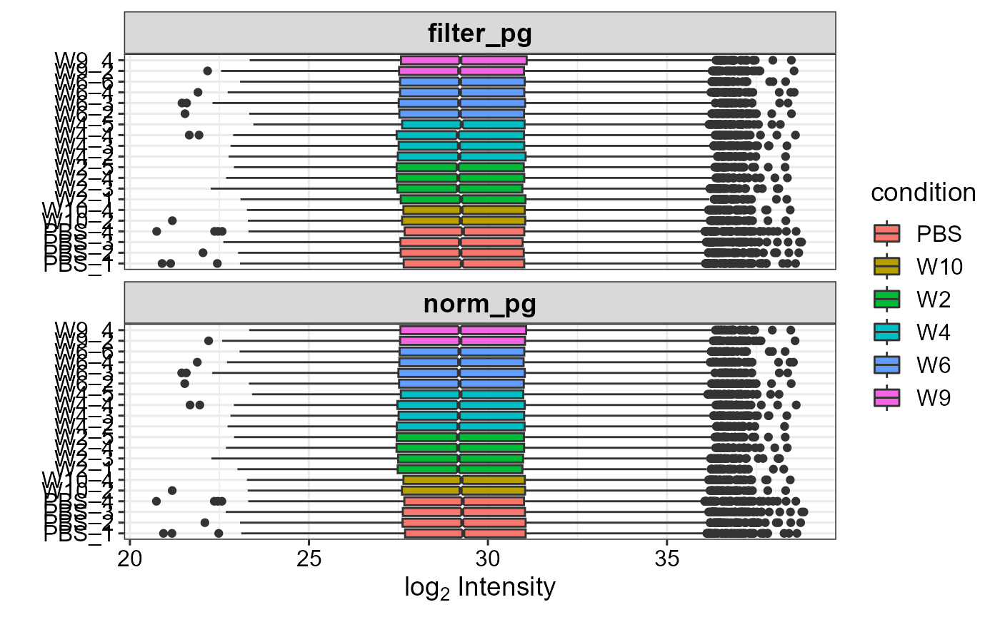
imputation
A considerable proportion of MVs still remain in the assay after filtering.
plot_missval(filter_pg)
MVs can be divided into missing at random (MAR), missing at random
(MAR) and missing not at random (MNAR), based on NA frequency intensity
signal. Function DEP2::impute draws kinds of imputation on
SE object. Inheriting from DEP, impute cluster the
imputation functions from MSnbase
and MsCoreUtils,
including following methods.
– Left-censored imputation methods, replace: “MinDet”, “MinProb”, “min”(LOD), “QRILC”, “zero”, “man”(impute by a left-shifted distribution)
– local similarity methods: “knn”, “nbavg”
– Global-structure methods: “MLE”, “BPCA”
Further detials can view the vignettes in DEP and
MSnbase.
In additional, DEP2 clusters two machine learning based imputation in
impute: “RF” and “GSimp”. “RF” call the
missForest::missForest, which train a random forest based
on observed parts of dataset. And “GSimp” is a Gibbs sampler based
left-censored imputation method proposed by Runmin Wei,
Jingye Wang, etc. These two methods take a long time on iteration
but are reported that could draw a better estimation on missing
values.
set.seed(35)
sample_rows <- sample(1:nrow(norm_pg), 300)
norm_pg_sample = norm_pg[sample_rows,] # random sample 150 features to reduce runing time
plot_detect(norm_pg_sample)
## Impute missing data using random draws from a Gaussian distribution centered around a minimal value (for MNAR)
imp_pg_MinProb <- DEP2::impute(norm_pg_sample, fun = "MinProb", q = 0.01)
#> Loading required namespace: imputeLCMD
#> [1] 0.31744
## Impute missing data using k-nearest neighbour approach
imp_pg_knn <- DEP2::impute(norm_pg_sample, fun = "knn")
#> Warning in knnimp(x, k, maxmiss = rowmax, maxp = maxp): 11 rows with more than 50 % entries missing;
#> mean imputation used for these rows
## Impute missing data using missForest
imp_pg_RF <- DEP2::impute(norm_pg_sample, fun = "RF", ntree = 50, mtry = 5)
## Impute missing data using Gibbs
imp_pg_GSimp <- DEP2::impute(norm_pg_sample, fun = "GSimp", hi_q = 0.1,
iters_each=40, iters_all=8)
#> Iteration 1 start...end!
#> Iteration 2 start...end!
#> Iteration 3 start...end!
#> Iteration 4 start...end!
#> Iteration 5 start...end!
#> Iteration 6 start...end!
#> Iteration 7 start...end!
#> Iteration 8 start...end!
## Impute missing data using QRILC
imp_pg_QRILC <- DEP2::impute(norm_pg_sample, fun = "QRILC") The distribution of mean intensity of missing or non-missing proteingroups
plot_detect(norm_pg_sample)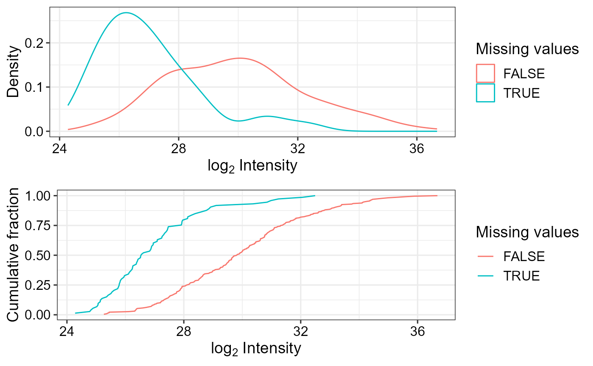 The difference among imputation methods.
NAs <- is.na(assay(norm_pg_sample))
## the imputed values by different methods.
imps <- list("GSimp" = imp_pg_GSimp, "QRILC" = imp_pg_QRILC, "MinProb" = imp_pg_MinProb, "RF" = imp_pg_RF, "knn" = imp_pg_knn) %>%
lapply(function(se){
x = assay(se) %>% data.frame %>% gather("label", "value") %>%
left_join(colData(se)[c("label","condition")],copy = T) %>%
magrittr::extract(as.vector(NAs),)
}) %>% data.table::rbindlist(idcol = "method")
#> Joining with `by = join_by(label)`
#> Joining with `by = join_by(label)`
#> Joining with `by = join_by(label)`
#> Joining with `by = join_by(label)`
#> Joining with `by = join_by(label)`
## the original normalized values without imputation
nonimps <- assay(norm_pg_sample) %>% data.frame %>% gather("label", "value") %>%
left_join(colData(norm_pg_sample)[c("label","condition")],copy = T) %>%
magrittr::extract(!as.vector(NAs),) %>% mutate(method = "non_impute") %>%
dplyr::select(method,everything())
#> Joining with `by = join_by(label)`
library(ggridges)
ggplot(rbind(imps, nonimps),aes(x = value,y = factor(method,level = unique(method)))) +
geom_density_ridges(fill = "#027ad450", scale = 1.2,
jittered_points = TRUE,position = position_points_jitter(height = 0),
point_shape = '|', point_size = 2, point_alpha = 1, alpha = 0.7) +
ylab("Impute method")+ ylab("Log2 value") + xlim(c(9,39))+
theme_DEP1()
#> Picking joint bandwidth of 0.356
Left-censored approaches, like MinProb and GSimp replace MVs by conservatively low values; local similarity method “knn” and global data learning “RF” impute relatively larger values. .These two method cater to MNAR and MAR respectively. But “knn” will impute a mean value when the row contains more than 50% missing.
rm(list = c("norm_pg_sample", "imp_pg_knn","imp_pg_MinProb","imp_pg_RF","imp_pg_GSimp"))
## Impute missing data using q-th quantile for following analysis
imp_pg <- impute(norm_pg, fun = "MinDet" ,q = 0.01)Hypothesis test
Function test_diff perform a moderated t-test from
limma. In DEP, p values is corrected by the fdrtool to
classify significantly regulated/enriched candidates and stable
proteins. DEP2 additionally provides two alternative frequently-used FDR
control method, “Benjamini-Hochberg fdr” and “Storey’s
qvalue”.
## Test every sample versus PBS control
diff_pg <- test_diff(imp_pg, type = "control", control = "PBS", fdr.type = "BH")
#> Tested contrasts: W10_vs_PBS, W2_vs_PBS, W4_vs_PBS, W6_vs_PBS, W9_vs_PBS
#> BH
## Test on manul contrasts
diff_pg2 <- test_diff(imp_pg, type = "manual", test = c("W4_vs_PBS"), fdr.type = "Storey's qvalue")
#> Tested contrasts: W4_vs_PBS
#> Storey's qvalueFunction add_rejections can classify significant hits
according L2FC (lfc) and adjusted p value (alpha)
threshold.
## Add significant rejections for features, based on
dep_pg <- add_rejections(diff_pg, alpha = 0.01, lfc = 2)
## get the significant subset
dep_pg_sig <- get_signicant(dep_pg)
nrow(dep_pg_sig)
#> [1] 249Use the plot_volcano to have a quick look on result.
### volcano plot on contrast "W4_vs_PBS"
plot_volcano(dep_pg, contrast = "W4_vs_PBS", adjusted = F)
## plot the cutoff line
plot_volcano(dep_pg, contrast = "W4_vs_PBS", adjusted = F,
add_threshold_line = "intersect", pCutoff = 0.05, fcCutoff = 1)
#> add intersect threshold line. fcCutoff = 1pCutoff = 0.05
Besides the intersect method, add_rejections can draw a curve cutoff approach described by Eva C.Keilhauer. Instead of intersect straight lines, the approach used curve lines with \(y > c/(x - x_0)\), where \(x\) is the log2 FC, \(y\) is adjusted P value of features (c = curvature, x[0] = minimum L2FC). We use the standard deviation \(\sigma\) determine x0 by \(x_0 = x_0.fold*\sigma\). \(\sigma\) is the standard deviation of the Gaussian curve distribution of log2 FC in each contrast.
## thresholdmethod = "curve"
dep_pg_curve <- add_rejections(diff_pg, thresholdmethod = "curve", curvature = 2, x0_fold = 2)
## the cutoff line on volcano
plot_volcano(dep_pg_curve, contrast = "W4_vs_PBS", add_threshold_line = "curve", curvature = 2, x0_fold = 2) /
plot_volcano(dep_pg_curve, contrast = "W6_vs_PBS", add_threshold_line = "curve", curvature = 2, x0_fold = 2)
#> add curve threshold line. Sigma = 0.41624138608919, x0 = 0.83248277217838, curvature = 2
#> add curve threshold line. Sigma = 0.478600344109222, x0 = 0.957200688218445, curvature = 2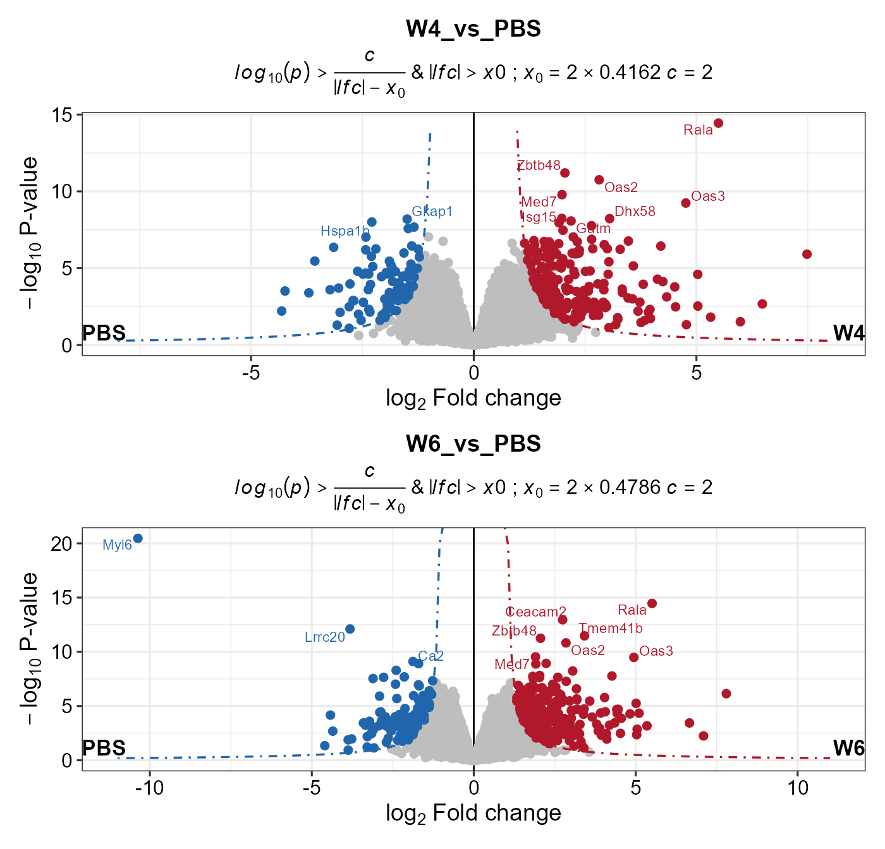
You can check the \(\sigma\) and
fitted Gaussian curve by plot_diff_hist.
## Check the fitted Gaussian curve
plot_diff_hist(dep_pg_curve, contrasts = c("W4_vs_PBS", "W6_vs_PBS"))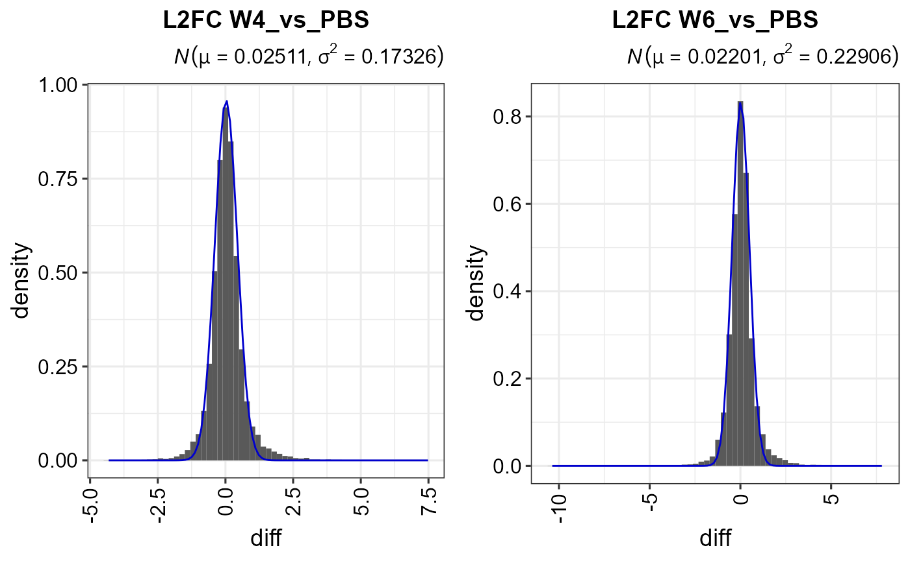
## Get the fit result
plot_diff_hist(dep_pg_curve, plot = F) ## a table of gaussian args \sigma and \mu
#> contrast mu sigma2
#> 1 W10_vs_PBS_diff 0.01374325 0.2407074
#> 2 W2_vs_PBS_diff 0.02327110 0.2266282
#> 3 W4_vs_PBS_diff 0.02511490 0.1732569
#> 4 W6_vs_PBS_diff 0.02201209 0.2290583
#> 5 W9_vs_PBS_diff 0.02354730 0.2595546plot_heatmap can plot a heatmap for significant
candidates.
plot_heatmap(dep_pg)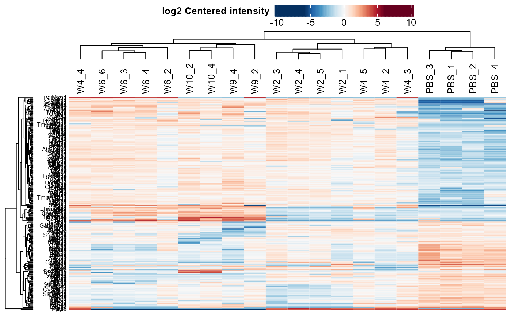
## Reorder columns by condition
dep_pg = DEP2::Order_cols(dep_pg,order = c("PBS","W2","W4","W6","W9","W10"))
plot_heatmap(dep_pg, cluster_columns = F, kmeans = T, k = 5, seed = 1) # cluster features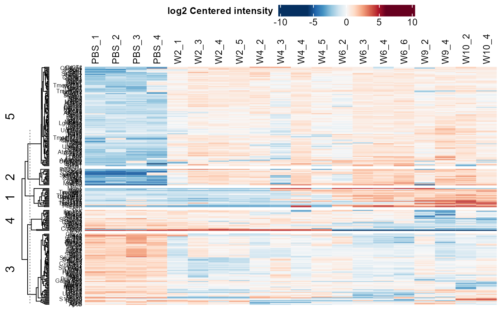
## Only plot the clusters that are up-regulated in treatment groups.
plot_heatmap(dep_pg, cluster_columns = F, kmeans = T, k = 5, seed = 1, col_limit = 4,
split_order = c(1,2,5)
)
## plot on select contrast
plot_heatmap(dep_pg, manual_contrast = "W4_vs_PBS")
Analysis based on protein re-aggregation
The second pipeline is aggregation protein abundance from peptide quantity data. The analysis workflow is different to last one in data processing steps.

Load data
data("Silicosis_peptide")Convert a QFeatures object
## Here we just select two groups to save computational cost in these vignette
(ecols <- grep("Intensity.PBS|Intensity.W4", colnames(Silicosis_peptide), value = T))
#> [1] "Intensity.PBS_1" "Intensity.PBS_2" "Intensity.PBS_3" "Intensity.PBS_4"
#> [5] "Intensity.W4_2" "Intensity.W4_3" "Intensity.W4_4" "Intensity.W4_5"
pe <- make_pe_parse(Silicosis_peptide, columns = ecols, mode = "delim")
pe
#> An instance of class QFeatures containing 1 assays:
#> [1] peptideRaw: SummarizedExperiment with 143528 rows and 8 columnsFilter
QFeatures object can be filtered though by filter_pe.
Its usage is similar to function filter_se, could filter
out unexpected features by missing ratio or based on identification
information in certain rowdata columns.
filt_pe <- filter_pe(pe,
thr = 1,fraction = 0.4, ## filter based on missing values
filter_formula = ~ Reverse != '+' & Potential.contaminant !="+" )
#> filter base on missing number is <= 1 in at least one condition.
#> filter base on missing number fraction < 0.4 in each row
#> filter base on giving formulaimputation
Imputation could perform before normalization, to reduce the potential effect caused by MVs.
## Use QFeatures::addAssay() and DEP2::impute
pe <- QFeatures::addAssay(filt_pe,
DEP2::impute(filt_pe[["peptideRaw"]], fun = "QRILC"),
name = "peptideImp")
plot_imputation(pe[["peptideRaw"]], pe[["peptideImp"]])
Normalization
Function normalize_pe perform normalize and call
QFeatures:normalize. Four normalization methods are
selectable., including “diff.median”, “quantiles”,
“quantiles.robust” ,“vsn”. Notice that quantiles.robust
can’t handle data table with MVs (ie NA). Therefore It is necessary to
Imputate in advance .
pe <- DEP2:::normalize_pe(pe,method = "quantiles.robust",
i = "peptideImp", ## nomalize on which assay
name = "peptideNorm" ## output assay name
)
plot_normalization(pe[["peptideRaw"]],pe[["peptideImp"]],pe[["peptideNorm"]])
Aggregation
DEP2 packaged function aggregate_pe based on
QFeatures::aggregateFeatures. The summarisation approach
aggrefun can be “RobustSummary” (also called MSqRobSum) (Sticker et al. 2020), “medianPolish”,
“totalMean”. Details can see ?aggregateFeatures. And
proteingroups can be summed by “Unique + Razor” or “Unique”.
aggregate_pe require several minutes depend on the peptide
assay scale.
begin_time = Sys.time()
pe <- DEP2::aggregate_pe(pe,
aggrefun = "RobustSummary",
aggregate_Peptide_Type = "Unique + Razor",
fcol = "Proteins", # the protein ID column in input table
i = "peptideNorm", # the assay to aggregate
reserve = "Gene.names" # reserve the Gene.names in row data.
)
#> [1] "aggregate by Unique + Razor peptides"
#> [1] "peptides distribution finished"
#> [1] "begin assay aggregate"
#> [1] "begin reducedataframe"
#> [1] "reducedataframe finiched"
#> [1] "assay aggregate finished"
#> [1] "aggregation finished"
print(Sys.time() - begin_time) # aggregate cost several minutes depent on the assay scale
#> Time difference of 1.03845 mins
pe # protein result is in the protein assay
#> An instance of class QFeatures containing 4 assays:
#> [1] peptideRaw: SummarizedExperiment with 98219 rows and 8 columns
#> [2] peptideImp: SummarizedExperiment with 98219 rows and 8 columns
#> [3] peptideNorm: SummarizedExperiment with 98219 rows and 8 columns
#> [4] protein: SummarizedExperiment with 9768 rows and 8 columns
se_pep <- pe2se(pe, names = "Gene.names", ids = "smallestProteingroups")Differential test Following differential test is
same to the proteingroups pipeline. Use test_diff and
add_rejections to classify significant protein.
## Differential test
diff_pep <- DEP2::test_diff(se_pep,type = "control", control = "PBS", fdr.type = "BH")
#> Tested contrasts: W4_vs_PBS
#> BH
## Add rejections
dep_pep <- add_rejections(diff_pep,alpha = 0.01, lfc = 2)
get_signicant(dep_pep) %>% nrow
#> [1] 76Data visualization functions is also worked for DEP results from re-aggregation.
## Volcano
plot_volcano(dep_pep, contrast = "W4_vs_PBS", add_threshold_line = "intersect")
#> add intersect threshold line. fcCutoff = 1pCutoff = 0.05
## Heatmap
plot_heatmap(dep_pep, kmeans = T,k = 5,col_limit = 6) 
Analysis for PTM-specific proteomics
DEP2 designs a new workflow for post-modification proteomics data analysis begin from modified peptides quantitative result. The post-translation modification information is necessary to distinguish modified sites, including position, modified residue (amino acid), gene name or protein ID that modification is associated with.
make_unique_ptm creates(or overwrites) the PTM
information columns, including name, ID,
gene_name, protein_ID, modified_aa,
modified_pos. The name, ID columns is the
identifier of each modified-peptide, following such naming rule: ’(gene
name/protein ID)_(modified amino acid)(position of modification)’
(e.g. “TBCA_K51” and “O75347_K51”).
Load data
The example we used here is the phosphorylated peptide result, table Phospho (STY)Sites.txt, from MaxQuant. In the table
## phosphorylated peptides table of the silicosis mouse model.
data(Silicosis_phos)
## Format the modification information and generated modified-peptides identifier.
## aa and pos is the modified amino acids and modified site in protein.
unique_pho <- make_unique_ptm(Silicosis_phos, gene_name = "Gene.names",
protein_ID = "Protein", aa = "Amino.acid",
pos = "Position") The name, ID is generated upon PTM information columns.
DT::datatable(unique_pho[1:7,c("name","ID","Gene.names","Protein","Amino.acid","Position")],
options = list(scrollX = T,pageLength = 7))Covert SE
## Take 'Intensity' columns.
ecols <- grep("Intensity.", colnames(unique_pho))
## Construct a SE object mentioned before.
se_ptm <- make_se_parse(unique_pho, columns = ecols,
mode = "delim", sep = "_", remove_prefix = T, log2transform = T)Filter
The following steps is Basically similar to the protomics analysis
pipeline. filter_se are a universal filter function for SE
object. A additional threshold should be set on ‘Localization.prob’ in
the MaxQuant modification result.
## Filter base on both missing occupancy and the localization probability for this site.
filt_ptm <- filter_se(se_ptm,
thr = 1, fraction = 0.3,
filter_formula = ~ Reverse!="+" &
Potential.contaminant!="+" &
Localization.prob>0.7
)Normalization
## VSN normalization
norm_ptm <- normalize_vsn(filt_ptm)Imputation
## KNN impute relatively larger values
imp_ptm <- impute(filt_ptm, fun= "knn")
#> Warning in knnimp(x, k, maxmiss = rowmax, maxp = maxp): 2065 rows with more than 50 % entries missing;
#> mean imputation used for these rows
#> Cluster size 11729 broken into 6954 4775
#> Cluster size 6954 broken into 2918 4036
#> Cluster size 2918 broken into 2328 590
#> Cluster size 2328 broken into 1841 487
#> Cluster size 1841 broken into 1661 180
#> Cluster size 1661 broken into 1404 257
#> Done cluster 1404
#> Done cluster 257
#> Done cluster 1661
#> Done cluster 180
#> Done cluster 1841
#> Done cluster 487
#> Done cluster 2328
#> Done cluster 590
#> Done cluster 2918
#> Cluster size 4036 broken into 56 3980
#> Done cluster 56
#> Cluster size 3980 broken into 2552 1428
#> Cluster size 2552 broken into 2523 29
#> Cluster size 2523 broken into 468 2055
#> Done cluster 468
#> Cluster size 2055 broken into 1044 1011
#> Done cluster 1044
#> Done cluster 1011
#> Done cluster 2055
#> Done cluster 2523
#> Done cluster 29
#> Done cluster 2552
#> Done cluster 1428
#> Done cluster 3980
#> Done cluster 4036
#> Done cluster 6954
#> Cluster size 4775 broken into 2517 2258
#> Cluster size 2517 broken into 1379 1138
#> Done cluster 1379
#> Done cluster 1138
#> Done cluster 2517
#> Cluster size 2258 broken into 861 1397
#> Done cluster 861
#> Done cluster 1397
#> Done cluster 2258
#> Done cluster 4775Differantail test
diff_ptm <- test_diff(imp_ptm, type = "manual", test = "PBS_vs_W6" , fdr.type = "BH")
#> Tested contrasts: PBS_vs_W6
#> BH
dep_ptm <- DEP2::add_rejections(diff_ptm, alpha = 0.05, lfc = 1)
plot_volcano(dep_ptm,adjusted = T, add_threshold_line = "intersect")
#> add intersect threshold line. fcCutoff = 1pCutoff = 0.05
#> Warning: ggrepel: 9 unlabeled data points (too many overlaps). Consider
#> increasing max.overlaps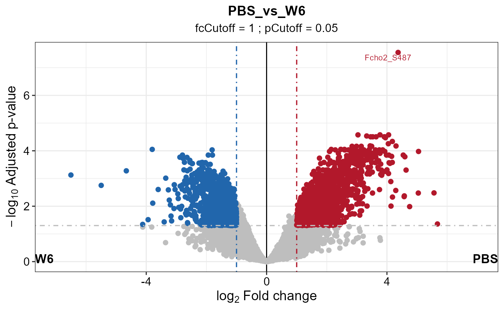
Analysis RNA-seq data
Multi-omics study has already become a widespread method in research. In particular, proteomics-transcriptomics combined studies can reveal regulation details, from multiple perspectives. Thus DEP2 packages a pipeline for RNA-seq data from DESeq2. here.
Load data
data(Silicosis_counts)
DT::datatable(head(Silicosis_counts), options = list(scrollX = T,pageLength = 6))Construct DESeqDataSet
dds <- make_dds_parse(Silicosis_counts,mode = "delim")
dds
#> class: DESeqDataSet
#> dim: 24936 18
#> metadata(1): version
#> assays(1): counts
#> rownames(24936): ENSMUSG00000000001 ENSMUSG00000000028 ...
#> ENSMUSG00000118633 ENSMUSG00000118636
#> rowData names(0):
#> colnames(18): PBS_1 PBS_2 ... W10_2 W10_3
#> colData names(4): label ID condition replicateFilter
DESeqDataSet inherits from SummarizedExperiment
##
inherits(dds,"SummarizedExperiment")
#> [1] TRUEFilter_se can also filter DESeqDataSet objects.
Parameter rowsum_threshold set threshold on counts row sum.
dds <- filter_se(dds, fraction = 0.3, thr = 1, rowsum_threshold = 35)
#> filter base on missing number is <= 1 in at least one condition.
#> filter base on missing number fraction < 0.3 in each row
#> filter base on counts sum >=35Transform ID
In this case, the gene identifier is Ensembl ID. In order to check
the gene conveniently, DEP2 can transform ID to gene symbol through the
OrgDb
databases. ID_transform can perform the ID convert and
replace the rownames of the object.
## Check if the annotation package is already installed.
check_organismDB_depends(organism = "Mouse")
#>
#> [1] TRUE
head(rownames(dds),4)
#> [1] "ENSMUSG00000000001" "ENSMUSG00000000028" "ENSMUSG00000000049"
#> [4] "ENSMUSG00000000056"
## Transform ID
dds <- DEP2::ID_transform(dds, species = "Mouse")
#> org.Mm.eg.db
#> Loading required package: org.Mm.eg.db
#> Loading required package: AnnotationDbi
#>
#> Attaching package: 'AnnotationDbi'
#> The following object is masked from 'package:dplyr':
#>
#> select
#> 'select()' returned 1:many mapping between keys and columns
head(rownames(dds),4)
#> [1] "Gnai3" "Cdc45" "Apoh" "Narf"If needed, ID_transform can be used on proteinomics
data, for example:
DEP2::ID_transform(dep_pg,
species = "Mouse",
from_columns = "ID",
fromtype = "UNIPROT")Differential test
The differential test step is similar to the foregoing pipelines, but
the test_diff is replace by test_diff_deg to
call DESeq2.
diff <- test_diff_deg(dds, type = "control", control = "PBS")
#> Performing DESeq analysis...
#> estimating size factors
#> estimating dispersions
#> gene-wise dispersion estimates
#> mean-dispersion relationship
#> final dispersion estimates
#> fitting model and testing
#> Formatting analysis result...
#> extracted results: W2_vs_PBS, W4_vs_PBS, W6_vs_PBS, W10_vs_PBS
#> Calulate a rlog & log2 transform assay, stored in rlg or ntd slot...
deg <- add_rejections(diff, alpha = 0.01, lfc = 1)test_diff_deg
Export result table
Function get_results can get the result table (or
significant subset) from differential test results.
## Get result table
DT::datatable(head(get_results(dep_pg)), options = list(scrollX = T,pageLength = 5))
## Get the significant subset
sig_deg = get_results(deg)
class(sig_deg)
#> [1] "data.frame"Function get_df_wide can get the full table from a DEP
result.
## Get full data set with row information.
DT::datatable(head(get_df_wide(dep_pg)), options = list(scrollX = T,pageLength = 5))Function get_df_wide can get results of significant
candidates.
## Get full data set of significant features
get_signicant(dep_pg,return_type = "table") %>% dplyr::select(ends_with("significant")) %>%
summary
#> W10_vs_PBS_significant W2_vs_PBS_significant W4_vs_PBS_significant
#> Mode :logical Mode :logical Mode :logical
#> FALSE:152 FALSE:140 FALSE:178
#> TRUE :97 TRUE :109 TRUE :71
#> W6_vs_PBS_significant W9_vs_PBS_significant significant
#> Mode :logical Mode :logical Mode:logical
#> FALSE:114 FALSE:141 TRUE:249
#> TRUE :135 TRUE :108Result comparation
After . plot_multi_venn and
plot_multi_heatmap can directly compare the significant
result from two omics experiments via name identifiers.
Use plot_multi_venn to compare the differentce between
two pipelines (analysis from MQ proteingroups or the peptides
re-aggregation pipeline).
## Test on the contrast W4_vs_PBS.
diff_pg <- test_diff(imp_pg, type = "manual", test = c("W4_vs_PBS"), fdr.type = "Storey's qvalue")
dep_pg <- diff_pg %>% add_rejections(alpha = 0.05,lfc = 2)
diff_pep <- DEP2::test_diff(se_pep,type = "control", control = "PBS", fdr.type = "Storey's qvalue")
dep_pep <- add_rejections(diff_pep,alpha = 0.05, lfc =2)
## Filter out pg quantified which only have one peptides.
dep_pep = filter_se(dep_pep,filter_formula = ~.n > 2)
dep_pg = filter_se(dep_pg,filter_formula = ~Razor...unique.peptides > 2)
## Plot Venn to explore the difference between two ways.
plot_multi_venn(omics_list = list(PG= dep_pg, pep=dep_pep))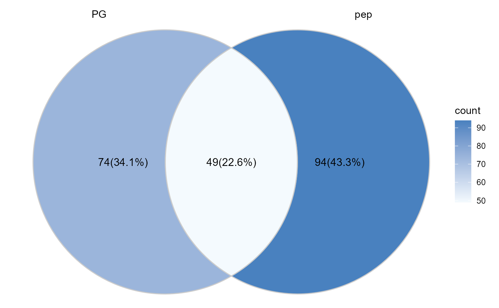
## If set the proteins remained in both result as background.
## dep_pep only contain two conditions of the study. PBS and W4. See the pe_peptides above.
overlap_protein = intersect(rownames(dep_pep), rownames(dep_pg))
plot_multi_venn(omics_list = list(PG= dep_pg, pep=dep_pep), background = overlap_protein)
Check the expression of interested proteins/genes accorss omics via
plot_multi_heatmap. Here we take some proteins may be
related to IL-1 signaling, the signaling pathway that is reported to be
upregulated in silicosis mouse model in the original paper.
## Take the proteins may response to interleukin-1 as an example.
IL1_relative_genes <-c("Irg1", "Il1rn", "Saa3", "Zbp1", "Ccl6",
"Serpine1", "Ccl21a", "Pycard", "Irak2", "Vrk2",
"Fn1", "Il1r1", "Irf1", "Ccl9", "Mapk11", "Tank",
"Mapk13")
## Order the samples by time.
dep_pg <- Order_cols(dep_pg, order = c("PBS","W2","W4","W6","W9","W10"))
## Plot the heatmap upon two DEP results.
plot_multi_heatmap(omics_list = list(PG= dep_pg, pep=dep_pep),
choose_name = IL1_relative_genes,
width = 4)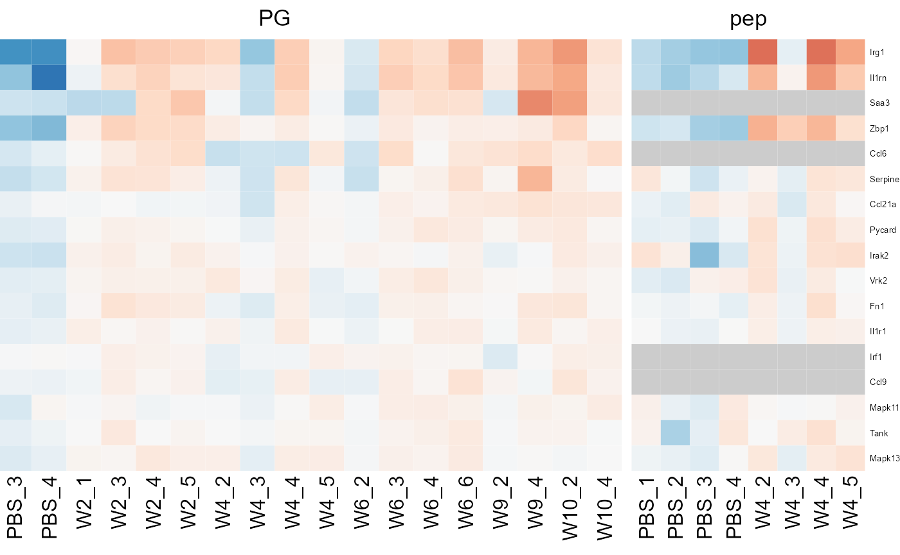
Post analysis
To reduce the barriers in format conversion between deferential test and downstream analysis, post analysis suites for DEP results is available in DEP2.
Biological function enrichment
Biological functional enrichment functions from enrichR,
clusterProfiler
and ReactomePA
are packaged in test_ORA and test_GSEA to
perform over enrichment analysis upon results output from
test_diff and add_rejection. Objective
gene/protein list is extracted. Then IDs are transformed though organism
annotation data, and further mapped biological knowledge annotated gene
sets.
test_ORA can perform enrichment analysis upon Gene
ontology, KEGG or REACTOME data.
## 1. Extract gene list
diff_pg <- test_diff(imp_pg, type = "manual", test = c("W4_vs_PBS"), fdr.type = "Storey's qvalue")
dep_pg <- diff_pg %>% add_rejections(alpha = 0.01,lfc = 2)
## 2. Check install
check_enrichment_depends() # check required packages
#> [1] TRUE
check_organismDB_depends("Mouse") # organism annotation for mouse
#> [1] TRUE
## Over representation analysis
# On one contrast
res_ora <- test_ORA(dep_pg, contrasts = "W4_vs_PBS", species = "Mouse",type = "GO")
#> 86 gene(s) transfrom to ENTREZID from SYMBOL. 2 gene(s) transfrom to ENTREZID from UNIPROT. 4 gene(s) transfrom to ENTREZID from ALIAS.
#> Star enrich GO terms by 92 ENTREZIDs.
class(res_ora)
#> [1] "enrichResult"
#> attr(,"package")
#> [1] "DOSE"
# On each contrasts
res_ora2 <- test_ORA(dep_pg, by_contrast = T, species = "Mouse",type = "GO")
#> 86 gene(s) transfrom to ENTREZID from SYMBOL. 2 gene(s) transfrom to ENTREZID from UNIPROT. 4 gene(s) transfrom to ENTREZID from ALIAS.
#> Star enrich GO terms by 92 ENTREZIDs.
class(res_ora2)
#> [1] "enrichResult"
#> attr(,"package")
#> [1] "DOSE"
## Gene set enrichment analysis
res_gsea <- DEP2::test_GSEA(dep_pg, by_contrast = F, species = "Mouse",type = "GO")
#> 8324 gene(s) transfrom to ENTREZID from SYMBOL. 110 gene(s) transfrom to ENTREZID from UNIPROT. 488 gene(s) transfrom to ENTREZID from ALIAS.
#> 60 gene(s) do not match in database.
class(res_gsea)
#> [1] "gseaResult"
#> attr(,"package")
#> [1] "DOSE"The output of test_ORA and test_GSEA is the
same object as from source functions, which is seamlessly compatible for
plot functions and manipulate function provided for enrichR
result. The visualization methods from enrichplot
package can seamlessly draw on output of these two output.
## Dotplot function from DOSE package
library(enrichplot)
#> Warning: package 'enrichplot' was built under R version 4.2.2
enrichplot::dotplot(res_ora)
## GSEA plot on one category
enrichplot::gseaplot(res_gsea,geneSetID = "GO:0071347")
cnet on interested biological process which enriched in GSEA.
## Cnetplot
res_gsea2 <- res_gsea %>%
filter(ID %in% c("GO:0071347","GO:0035329","GO:0032660","GO:0090263","GO:0035456","GO:0038061"))
cnetplot(res_gsea2,foldChange = res_gsea@geneList,node_label = "category",showCategory = 6)
#> Warning in cnetplot.enrichResult(x, ...): Use 'color.params = list(foldChange = your_value)' instead of 'foldChange'.
#> The foldChange parameter will be removed in the next version.
#> Scale for size is already present.
#> Adding another scale for size, which will replace the existing scale.
#> Warning: Removed 101 rows containing missing values
#> (`geom_text_repel()`).
More usages and details are available the Yu’s introduction biomedical-knowledge-mining-book.
Expression pattern cluster
In the time-course omics studies or the experiments with complex
group design, it’s not easy to find out key candidates across entire
experiment from cumbersome contrasts. DEP2 provides a
get_tc_cluster function to perform timecourse cluster for
omics data with multiple groups. It cluster features by “cmeans”, and
return a list contains heatmap plot and cluster result. In the omics
experiement with multiple experimental groups,
get_tc_cluster can classify genes/proteins according to
their expression patterns.
## Perform cluster on signicant protein in all contrast
tc_pg <- get_tc_cluster(get_signicant(dep_pg),
group_order = c("PBS","W2","W4","W6","W9","W10") # Set group order
)
#> aabb[1] "start timeclust"
#> beging 'cm' cluster by dist = 'euclidean'
#> [1] "finish heatmap"
## Time course heatmap
tc_pg$ht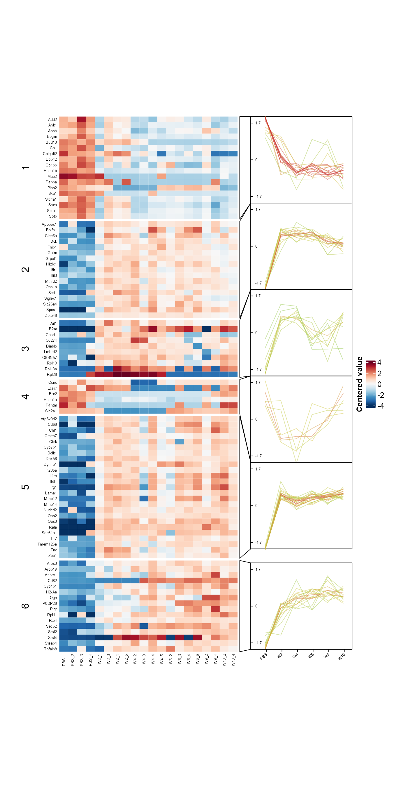
## Expression cluster on phospholated sites
tc_ptm <- get_tc_cluster(get_signicant(dep_ptm),
group_order = c("PBS","W2","W4","W6","W9","W10"), # Set group order
row_font_size = 0,
k = 8,
heatmap_height = 2
)
#> aabb[1] "start timeclust"
#> beging 'cm' cluster by dist = 'euclidean'
#> `use_raster` is automatically set to TRUE for a matrix with more than
#> 2000 rows. You can control `use_raster` argument by explicitly setting
#> TRUE/FALSE to it.
#>
#> Set `ht_opt$message = FALSE` to turn off this message.
#> [1] "finish heatmap"
tc_ptm$ht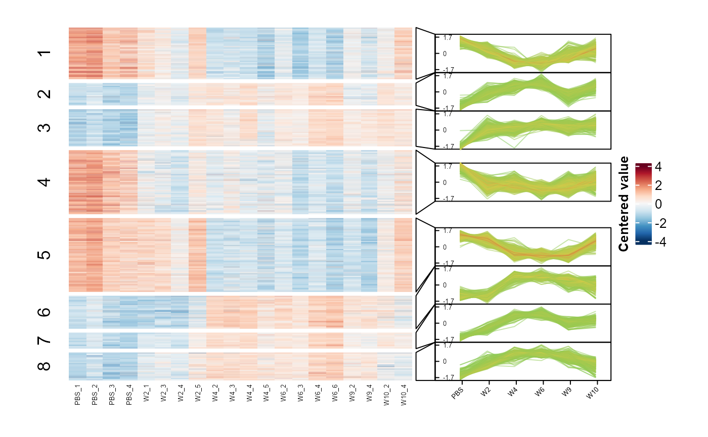
The output of get_tc_cluster contains a heatmap combined
with expression line chart and a cluster result table in store in the
‘res’ slot. The cluster table is a data.frame recording the closest
cluster, membership values and expression values.
Protein-protein interaction
DEP2 provides a function test_PPI to construct
protein-protein interaction network though STRING data.
test_PPI perform PPI analysis locally and will download the
species data from STRING. Notably, test_PPI use a local
STRING data. Function load_PPIdata checks whether local
database is exist. If STRING data is absent, load_PPIdata
and test_PPI will try to download the PPI data of the
species from website and save in .
# 1. Check required packages for network construction.
check_PPI_depends()
#> [1] TRUE
# 2. Load STRING data.
## If local STRING is missing, load_PPIdata will download to system.file("PPIdata", "Mouse",package = "DEP2")
load_PPIdata(speciesname = "Mouse")
#> Input species is Mouse The species ID is 10090
#> fristDownload
#> fristDownload
#> fristDownload
#> load succeed
#> [1] "Loading finished!"
# 3.Load STRING data and perform PPI analysis.
## It also automatically download data if loacl files is missing.
PPI_res <- test_PPI(
dep_pg,
contrasts = "W4_vs_PBS",
species = "Mouse",
STRING.version = "11.5",
score_cutoff = 400
)
#> 86 gene(s) transfrom to ENTREZID from SYMBOL. 2 gene(s) transfrom to ENTREZID from UNIPROT. 4 gene(s) transfrom to ENTREZID from ALIAS.
# igraph network
PPI_ig <- PPInetwork(PPI_res,returntype = "igraph")
igraph::plot.igraph(PPI_ig)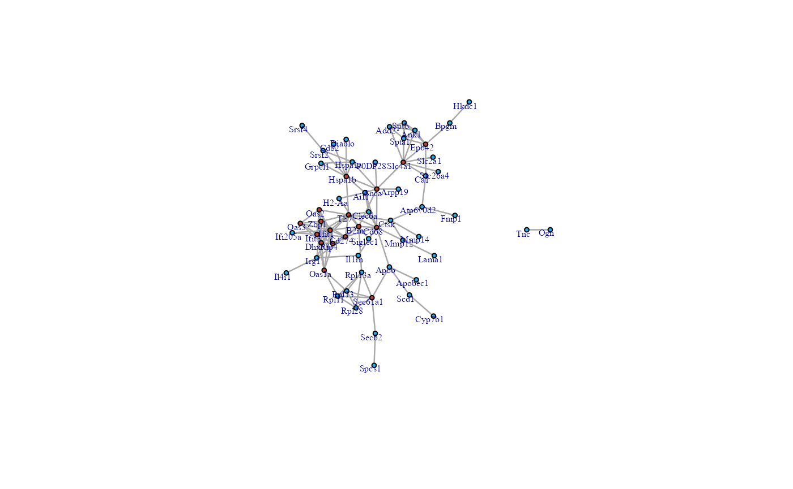
## visNetwork network
PPInetwork(PPI_res,returntype = "visNetwork") Session information
#> R version 4.2.1 (2022-06-23 ucrt)
#> Platform: x86_64-w64-mingw32/x64 (64-bit)
#> Running under: Windows 10 x64 (build 19043)
#>
#> Matrix products: default
#>
#> locale:
#> [1] LC_COLLATE=Chinese (Simplified)_China.utf8
#> [2] LC_CTYPE=Chinese (Simplified)_China.utf8
#> [3] LC_MONETARY=Chinese (Simplified)_China.utf8
#> [4] LC_NUMERIC=C
#> [5] LC_TIME=Chinese (Simplified)_China.utf8
#>
#> attached base packages:
#> [1] grid stats4 stats graphics grDevices utils datasets
#> [8] methods base
#>
#> other attached packages:
#> [1] enrichplot_1.18.3 org.Mm.eg.db_3.16.0
#> [3] AnnotationDbi_1.60.0 ggridges_0.5.4
#> [5] patchwork_1.1.2 missForest_1.5
#> [7] ggplot2_3.4.1 dplyr_1.1.0
#> [9] tibble_3.1.8 DEP2_0.3.06.12
#> [11] R6_2.5.1 limma_3.54.1
#> [13] MSnbase_2.24.2 ProtGenerics_1.30.0
#> [15] mzR_2.32.0 Rcpp_1.0.10
#> [17] MsCoreUtils_1.10.0 SummarizedExperiment_1.28.0
#> [19] Biobase_2.58.0 GenomicRanges_1.50.2
#> [21] GenomeInfoDb_1.34.9 IRanges_2.32.0
#> [23] S4Vectors_0.36.1 BiocGenerics_0.44.0
#> [25] MatrixGenerics_1.10.0 matrixStats_0.63.0
#> [27] tidyr_1.3.0 BiocStyle_2.26.0
#>
#> loaded via a namespace (and not attached):
#> [1] rappdirs_0.3.3 R.methodsS3_1.8.2
#> [3] ragg_1.2.5 bit64_4.0.5
#> [5] knitr_1.42 R.utils_2.12.2
#> [7] DelayedArray_0.23.2 data.table_1.14.8
#> [9] KEGGREST_1.38.0 RCurl_1.98-1.10
#> [11] AnnotationFilter_1.22.0 doParallel_1.0.17
#> [13] generics_0.1.3 snow_0.4-4
#> [15] preprocessCore_1.60.2 cowplot_1.1.1
#> [17] RSQLite_2.3.0 shadowtext_0.1.2
#> [19] proxy_0.4-27 bit_4.0.5
#> [21] assertthat_0.2.1 TCseq_1.22.6
#> [23] viridis_0.6.2 xfun_0.39
#> [25] jquerylib_0.1.4 babelgene_22.9
#> [27] evaluate_0.20 fansi_1.0.4
#> [29] dbplyr_2.3.0 igraph_1.4.0
#> [31] DBI_1.1.3 geneplotter_1.76.0
#> [33] htmlwidgets_1.6.1 purrr_1.0.1
#> [35] ellipsis_0.3.2 RSpectra_0.16-1
#> [37] crosstalk_1.2.0 ggnewscale_0.4.8
#> [39] QFeatures_1.8.0 bookdown_0.34
#> [41] annotate_1.76.0 vctrs_0.5.2
#> [43] imputeLCMD_2.1 abind_1.4-5
#> [45] cachem_1.0.6 withr_2.5.0
#> [47] ggforce_0.4.1 RVenn_1.1.0
#> [49] HDO.db_0.99.1 itertools_0.1-3
#> [51] treeio_1.22.0 GenomicAlignments_1.34.0
#> [53] fdrtool_1.2.17 MultiAssayExperiment_1.24.0
#> [55] cluster_2.1.4 DOSE_3.24.2
#> [57] BiocBaseUtils_1.0.0 ape_5.7
#> [59] lazyeval_0.2.2 crayon_1.5.2
#> [61] glmnet_4.1-6 edgeR_3.40.2
#> [63] pkgconfig_2.0.3 labeling_0.4.2
#> [65] units_0.8-1 tweenr_2.0.2
#> [67] nlme_3.1-162 rlang_1.0.6
#> [69] lifecycle_1.0.3 sandwich_3.0-2
#> [71] downloader_0.4 affyio_1.68.0
#> [73] randomForest_4.7-1.1 rprojroot_2.0.3
#> [75] polyclip_1.10-4 graph_1.76.0
#> [77] rngtools_1.5.2 Matrix_1.5-3
#> [79] aplot_0.1.9 zoo_1.8-11
#> [81] GlobalOptions_0.1.2 png_0.1-8
#> [83] viridisLite_0.4.1 rjson_0.2.21
#> [85] bitops_1.0-7 R.oo_1.25.0
#> [87] gson_0.0.9 visNetwork_2.1.2
#> [89] KernSmooth_2.23-20 Biostrings_2.66.0
#> [91] blob_1.2.3 doRNG_1.8.6
#> [93] shape_1.4.6 classInt_0.4-8
#> [95] stringr_1.5.0 qvalue_2.30.0
#> [97] gridGraphics_0.5-1 tmvtnorm_1.5
#> [99] reactome.db_1.82.0 scales_1.2.1
#> [101] graphite_1.44.0 memoise_2.0.1
#> [103] magrittr_2.0.3 plyr_1.8.8
#> [105] zlibbioc_1.44.0 scatterpie_0.1.8
#> [107] compiler_4.2.1 RColorBrewer_1.1-3
#> [109] pcaMethods_1.90.0 clue_0.3-64
#> [111] DESeq2_1.38.3 Rsamtools_2.14.0
#> [113] cli_3.6.0 affy_1.76.0
#> [115] XVector_0.38.0 MASS_7.3-58.2
#> [117] tidyselect_1.2.0 vsn_3.66.0
#> [119] stringi_1.7.12 textshaping_0.3.6
#> [121] highr_0.10 yaml_2.3.7
#> [123] GOSemSim_2.24.0 askpass_1.1
#> [125] locfit_1.5-9.7 norm_1.0-10.0
#> [127] MALDIquant_1.22 ggrepel_0.9.3
#> [129] sass_0.4.5 fastmatch_1.1-3
#> [131] tools_4.2.1 parallel_4.2.1
#> [133] circlize_0.4.15 rstudioapi_0.14
#> [135] foreach_1.5.2 gridExtra_2.3
#> [137] farver_2.1.1 mzID_1.36.0
#> [139] Rtsne_0.16 ggraph_2.1.0
#> [141] digest_0.6.31 BiocManager_1.30.19
#> [143] ncdf4_1.21 org.Hs.eg.db_3.16.0
#> [145] httr_1.4.4 sf_1.0-9
#> [147] ComplexHeatmap_2.14.0 colorspace_2.1-0
#> [149] XML_3.99-0.13 fs_1.6.1
#> [151] reticulate_1.28 umap_0.2.10.0
#> [153] splines_4.2.1 yulab.utils_0.0.6
#> [155] ggVennDiagram_1.2.2 tidytree_0.4.2
#> [157] pkgdown_2.0.7 graphlayouts_0.8.4
#> [159] gmm_1.7 ggplotify_0.1.0
#> [161] systemfonts_1.0.4 xtable_1.8-4
#> [163] ggtree_3.6.2 jsonlite_1.8.4
#> [165] tidygraph_1.2.3 ggfun_0.0.9
#> [167] pillar_1.8.1 htmltools_0.5.4
#> [169] glue_1.6.2 fastmap_1.1.0
#> [171] clusterProfiler_4.6.2 DT_0.27
#> [173] BiocParallel_1.32.5 class_7.3-21
#> [175] codetools_0.2-19 fgsea_1.24.0
#> [177] mvtnorm_1.1-3 utf8_1.2.3
#> [179] lattice_0.20-45 bslib_0.4.2
#> [181] clusterProfiler.dplyr_0.0.2 ReactomePA_1.42.0
#> [183] magick_2.7.4 GO.db_3.16.0
#> [185] openssl_2.0.5 survival_3.5-3
#> [187] rmarkdown_2.20 desc_1.4.2
#> [189] munsell_0.5.0 e1071_1.7-13
#> [191] GetoptLong_1.0.5 GenomeInfoDbData_1.2.9
#> [193] iterators_1.0.14 impute_1.72.3
#> [195] msigdbr_7.5.1 reshape2_1.4.4
#> [197] gtable_0.3.1